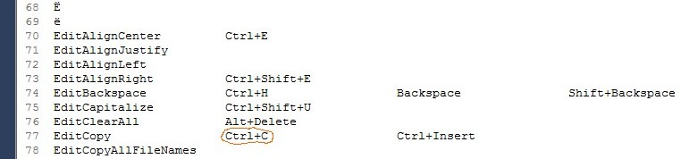

[top] TextPad-bootstraps: Format and specificationsEach TextPad-bootstrap has three phrases:
The values of these three phrases are conceptually equal: They each represent, in three different formats, the single key-command (the bootstrap-key-command) associated to a particular built-in TextPad command--one that happens to be a TextPad-bootstrap. All main phrases (for a single project--either XKP or TPKC) are stored in a single phrase-file. The "non-main" phrases are stored in another file. All three phrases are critical to XBN-PhraseExpress.Displayed in uncompressed format. See phrase-format specifications
zTPCopy -- TextPad built-in command: Edit > EditCopy
{#CTRL -chars c}{#insert zTSlp}{#sleep 10}
zTPCopyEsc
\\\{#CTRL -chars c\\\}\\\{#insert zTSlp\\\}\\\{#sleep 10\\\}
zTPCopyTPKeys
Ctrl+C
[BACK] TextPad-bootstrap: Main phraseThe main TextPad-bootstrap phrase is what actually triggers a built-in TextPad command. You are encouraged to call these phrases from your own PhraseExpress code. The main phrases (for each project) are stored in a single phrase-file.
zTPCopy -- TextPad built-in command: Edit > EditCopy
{#CTRL -chars c}{#insert zTSlp}{#sleep 10}
The XKP-project requires "raw" PhraseExpress key-presses in the phrase body. The last two statements in this phrase should be zTSlp, and then minimal sleep as discussed below.
zTPFileOpen -- TextPad built-in command: File > FileOpen
{#insert zCpOO}{#sleep 1750}
In the TPKC-project, the final key-press can be an x-key-presses, which already integrates a call to zTSlp. All previous key-presses should be raw key-presses.
zTP". Example:
zTPCopy -- TextPad built-in command: Edit > EditCopy
zTSlpzTpkcMillsBtwMultiKeyKCs{#insert zTPCopy}{#sleep 50}
zTpkc[abrv]DfltPostKcSlpMils[BACK] TextPad-bootstrap: Escaped (literalized) phraseThe escaped TextPad-bootstrap phrase is exactly equal to its main phrase, except that all curlys are escaped. This and the TextPad-key-press phrase are considered the "non-main" tp-bootstrap phrases, and are both stored together in a single phrase-file. The escaped tp-bootstrap phrase
zTPCopyEsc
\\\{#CTRL -chars c\\\}\\\{#insert zTSlp\\\}\\\{#sleep 10\\\}
Esc" at the end.
zTPCopyEsc"{#CTRL -chars c}{#insert zTSlp}{#sleep 10}
\\\{#CTRL -chars c\\\}\\\{#insert zTSlp\\\}\\\{#sleep 10\\\}(There are utilities to assist you.)
[BACK] TextPad-bootstrap: TextPad key-press phraseThe TextPad-key-press phrase in a TextPad-bootstrap has the same key-press(es) as its escaped and main counterparts, but with key-presses as specified in
TextPad > Configure > Preferences > Keyboard
Specifically, it contains the exact key-press(es) as printed in the TextPad all-command-list. This and the escaped phrase are stored together in a single file.
zTPCopyTPKeys Ctrl+C
Name: Must be equal to the name of the main tp-bootstrap phrase, with "TPKeys" at the end. Example:
zTPCopyTPKeys
Must be the exact value printed in the TextPad all-command-list, for this particular command. For example, the built-in TextPad command
EditCopy
is a TextPad-bootstrap. Its main-phrase name is
zTPCopy
An example key-command is
Ctrl+C
as listed in
TextPad > Configure > Preferences > Keyboard > Categories > "Edit" > Commands > "EditCopy"
More examples (note the 1 multi-key key-command)
Since the value of this phrase is not PhraseExpress code, it should therefore have no SLEEP or calls to zTSlp. TP-key-press phrases are used by the first step of the first TPKC user-build-process (sub-proc-10) to delete all bootstrap-kcs from the tp-all-cmd-list.
Below are two screenshots.
EditCopy" command, and its key-command "Ctrl+C" (the first is its bootstrap-kc, the rest its nbs-kcs)EditCopy.
